Dynamiques 9624
Développement d’image de marque et web
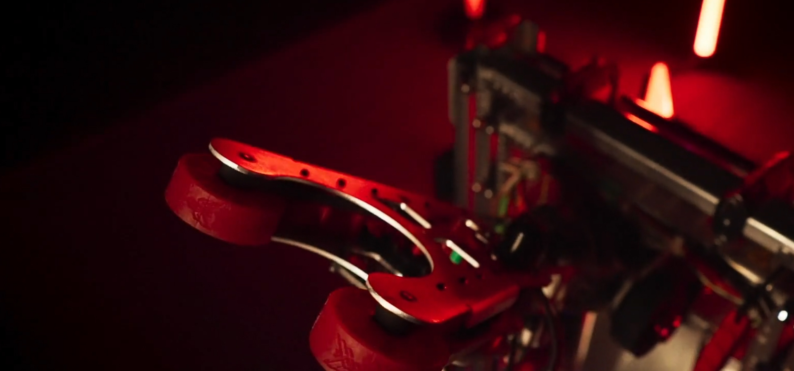
Mentorat : Sunita Meckunkir Coéquipière : Malika Chatelais Mise au normes : Agence CCL Photo : Damien Utilisation de l’AI : Correction des textes
Ce projet a été réalisé sur mon temps libre, dans un cadre parascolaire, afin de créer l'identité visuelle et le site web représentant l'équipe des Dynamiques 9624, une équipe de robotique sportive créée en 2024.
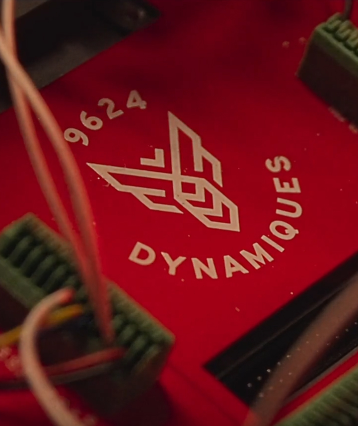
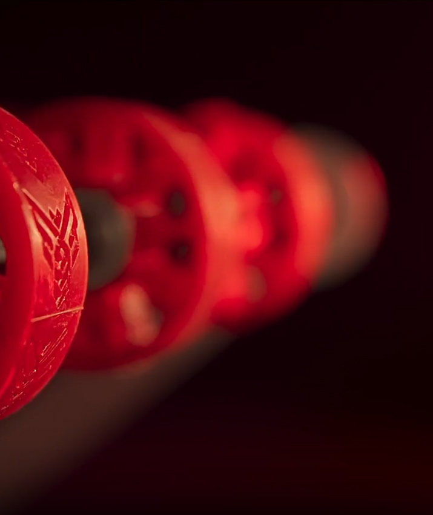
L'objectif était de concevoir, en 7 semaines, un robot 100 % fonctionnel capable d'exécuter diverses tâches. Durant cette période, ma mission était de définir notre identité visuelle et de la valoriser auprès des juges.
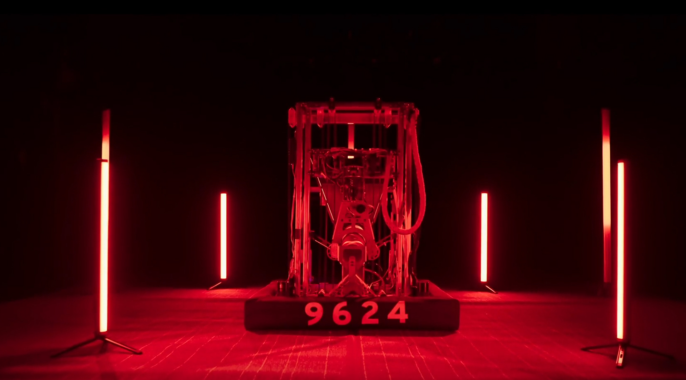
Les différents outils, logiciels et techniques utilisés pour ce projet
sortes
compétence
en gros
Pour éviter une identité trop institutionnelle, j'ai choisi des couleurs vives, un style ludique et des éléments graphiques rappelant les abeilles.
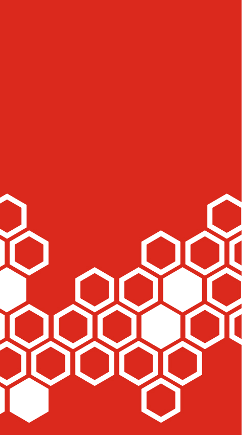
Légende
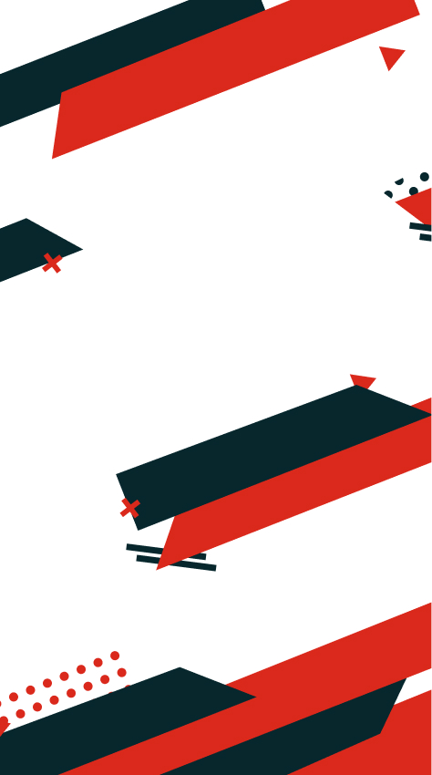
Légende
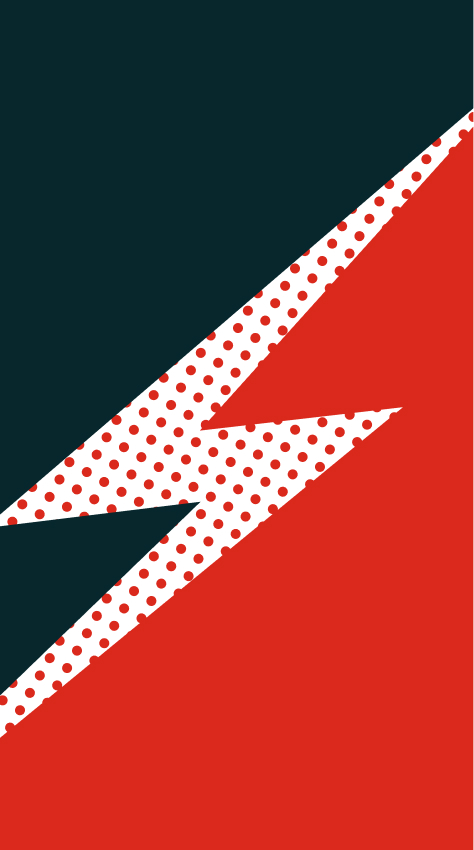
Légende
Voici les 5 étapes majeures de ce projet qui l’ont mené à sa complétion.
étape
titre
en gros
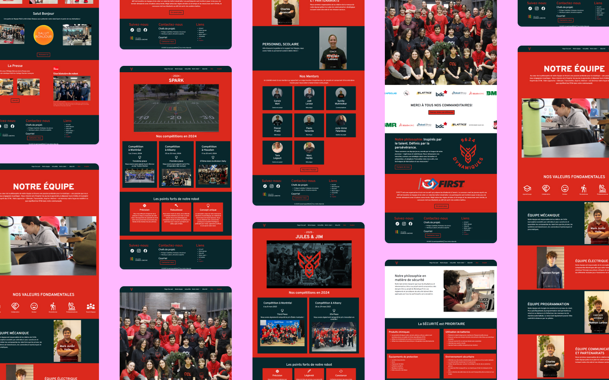
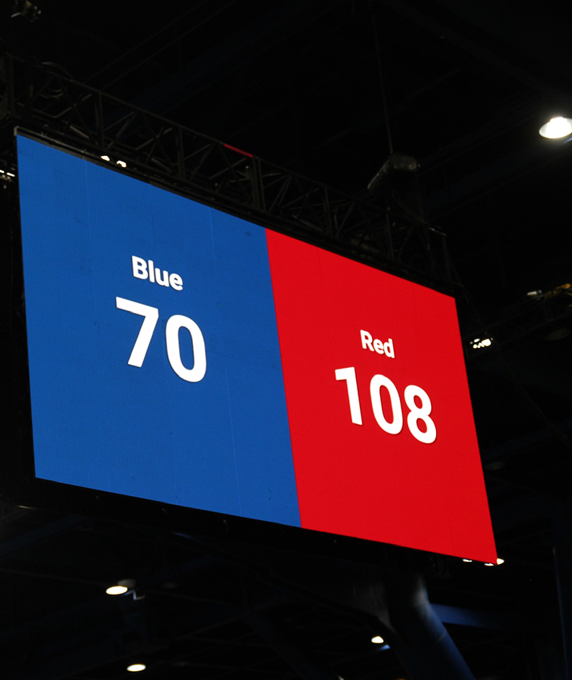
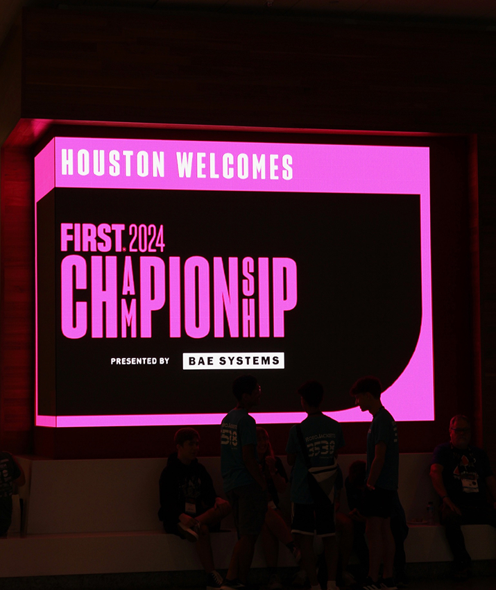
Ce projet m'a permis de mieux comprendre l'importance de créer une identité cohérente à travers différents supports. J'ai également appris à mieux justifier mes choix de design plutôt que de me baser uniquement sur mes préférences personnelles.
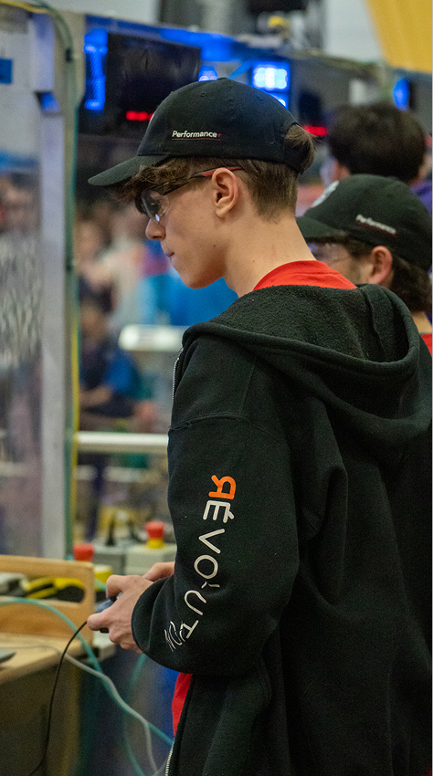
Légende
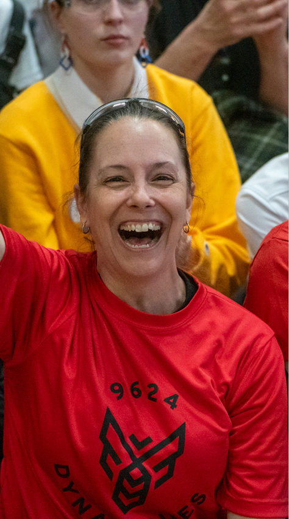
Légende
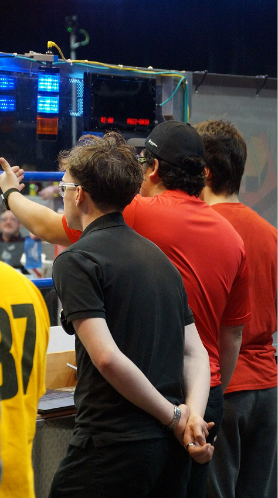
Légende
J’ai réalisé plusieurs autres petits projets liés aux Dynamiques, voici des extraits de ces derniers
Ce projet a été réalisé dans le cadre de mon portfolio afin de créer une identité visuelle qui représente